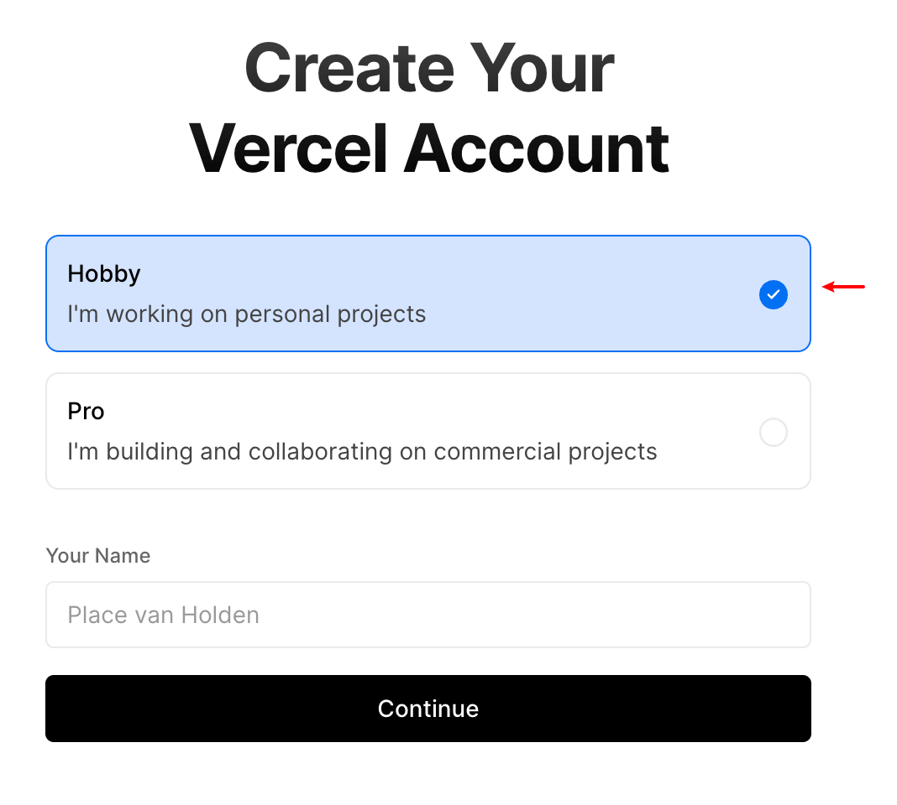

!!! warning 未完待续
1 域名1
2 博客书写工具
2.1 mkdocs
mkdocs-material best plugin charts #### tasklist/checklist
```python title=“/opt/miniconda3/envs/py310/lib/python3.10/site-packages/pymdownx” classes.append(“task-list-item”) # 这里简单改改… # [ ] xxx 开头的tasklist 表示正在进行中的任务 # [x] –xxx 开头表示已经完成,比较满意 # 开头的tasklist 表示正在进行中的任务 if li.text is not None: if “” in li.text : classes.append(”task-list-item-wip”) li.text = li.text.replace(””, ““) elif”–” in li.text: classes.append(“task-list-item-perfect”) li.text = li.text.replace(“–”, ““) else: classes.append(”task-list-item-todo-finish”)
if len(li):
first = list(li)[0]
if first.tag == "p" and first.text is not None:
if "__" in first.text:
classes.append("task-list-item-wip")
first.text = first.text.replace("__", "")
elif "--" in first.text:
classes.append("task-list-item-perfect")
first.text = first.text.replace("--", "")
else:
classes.append("task-list-item-todo-finish")
```markdown
- [x] java
- [ ] python
* [x] golang
* [x] js
* [ ] __rust __表示正在进行
- [ ] c2.1.1 chart
charts demo page #### markmap mkdocs-markmap markmap
```markmap
# Root
## Branch 1
- Branchlet 1a
- Branchlet 1b
- abc
- fff
- fff
## Branch 2
- Branchlet 2a
- Branchlet 2b
```2.1.2 bitfield
2.1.3 plantuml
wbs
@startwbs
<style>
' this time, scoping to wbsDiagram
wbsDiagram {
' Here we introduce a global style, i.e. not targeted to any element
' thus all lines (meaning connector and borders,
' there are no other lines in WBS) are black by default
Linecolor black
' But we can also target a diagram specific element, like arrow
arrow {
' note that Connectors are actually "Arrows"; this may change in the future
' so this means all Connectors and Arrows are now going to be green
LineColor green
}
}
</style>
* World
** America
*** Canada
** Europe
*** England
*** Germany
*** Spain
@endwbs样式修改, 可以这样看 有哪些可以改的
2.1.4 blockdiag
blockdiag #### 导入文件 !!! warning 文件路径请用 “” 包起来
--8<-- "c/basis/code/main.c"
或使用--8<-- 然后换行+文件路径+换行+--8<-- 的方式
你可以在这些外面用 3个`包起来,这样就变成代码块
2.2 hugo
3 博客部署方案
3.1 netlify
3.2 heroku
注册需要fq, 才能看到 验证码 ### github pages ### vercel !!! tip 你部署在vercel上的网站是可以访问外网的哦,不用翻墙. #### 注册 1. 访问vercel网站 2. 输入用户名后,continue
 3. 选择注册方式
=== "Continue with Github"
点击后,弹出的页面中选择这个授权<br>
{ width="400" }<br>
如果你用的github邮箱是国内的,或者 hotmail 可能都会提示user block之类的错误.<br>
可以试着为你的github添加一个gmail邮箱(关于注册自行解决,登录可以用QQ邮箱APP,无需fq),然后将它设置为你的主邮箱.<br>
再试着点击 `Continue with Github` (可能需要等待一段时间),如果还不行的话, 我们就使用 `Continue with Email` 邮箱来注册.
=== "Continue with Email"
输入邮箱 ,请使用gmail邮箱- 手机验证, 可以使用国内的手机号
3.2.1 登录
!!! warning 用邮箱登录的时候,提示的页面{==千万不要关闭==}, 先去验证邮箱,然后这个 页面会自动跳转到已经登录的界面!!
3.2.2 部署
3.2.3 国内无法访问的问题
需要配置域名
3.3 cloudflare
pages workers-and-pages/create/pages